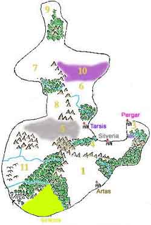
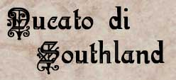
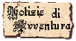
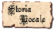
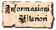

Il Ducato di Southland è situato infatti a ridosso dell'imponente catena montuosa dei Roam, i suoi confini naturali sono molto definiti giungendo ad Est fino al grande fiume Smerald (chiamato in questo modo per il bellissimo colore verde delle sue acque).
Questo Ducato ha una storia particolare che risente del felice isolamento in cui ha vissuto.
Particolarmente sviluppate sono le belle arti come la pittura la scultura e la poesia, l'architettura è sobria ma al tempo stesso elegante. Le vesti sono sfarzose e il tenore di vita fortemente bucolico è elevato per tutta la popolazione.
Questo Ducato per ricchezza e agiatezza supera tutti gli altri territori umani potendo competere quasi con l'imponente Repubblica Silveriana.
Il numero degli abitanti però non è elevato, gran parte del territorio è coltivato, abbondano le coltivazioni di grano e di vite, unico grosso centro urbano è la capitale Sinkros. Sono presenti invece numerosi i piccoli borghi rurali con a capo nobili locali facenti tutti capo alla famiglia ducale di Sinkros.
La vita nel Ducato scorre tranquilla... le campagne non sono pericolose e i cittadini di Sinkros si dedicano all'artigianato e al commercio. I territori a ridosso dei monti sono i più pericolosi ... briganti e umanoidi ostili sfruttano infatti i nascondigli nelle montagna e le impervie vie per sfuggire alla cattura delle truppe ducali. Eppure sono numerose le comunità montane del ducato sui monti dato la straordinaria ricchezza dei Roam di minerali e risorse primarie (caccia e legna).
Tutto il confine est è segnato da una grande foresta utilizzata dai cacciatori e dai boscaioli...
Sono presenti numerosi comunità autonome di semi-umani caratteristica insolita per un ducato umano ad Arelia... Inaspettatamente, infatti, fra le strade della capitale Sinkros, che non è di dimensioni eccessive, è possibile incontrare nani, elfi, halfling e gnomi, tutti perfettamente integrati nella società.
Famosa è la Guardia Elfica della Famiglia Ducale... unico esempio di famiglia nobiliare umana su Arelia che utilizza guardie del corpo non umane (fatta eccezione per il breve periodo in cui i Valèrian di Pergar utilizzarono la Guardia Scura di Elfi Scuri...).



